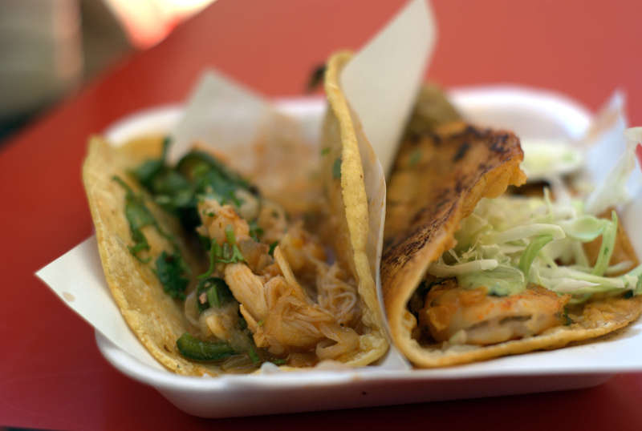
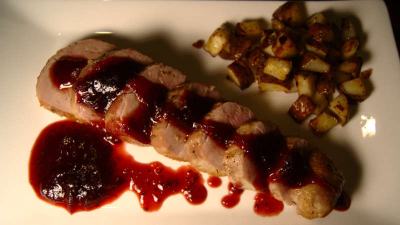
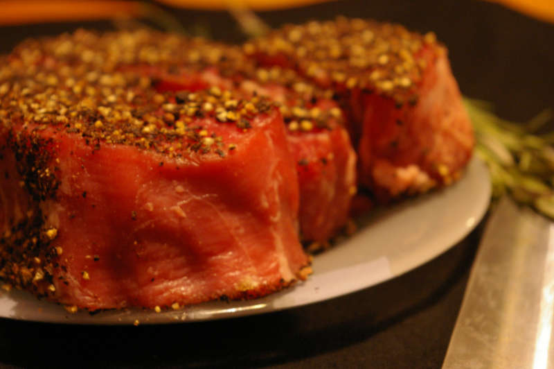

 A few examples of the tacos we've featured on our blog, ranging from homemade to taco-cart and restaurant. Pictured are some lobster and shrimp tacos from La Avioneta in Ensenada, Mexico.
Loin
 No strangers to all things oink, we've pictured here a pork loin in cranberry sauce.
Beef
 When in Rome, do as the romans, they say.. so, moo is also on the menu! Pictured here are some filets resting and coming up to temperature before meeting the pan for some steak au poivre.